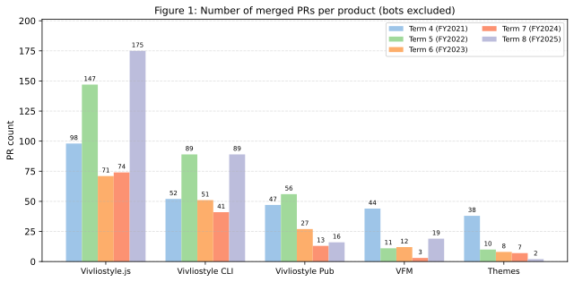

The number of PRs for our major products this term (excluding those from applications) is shown below. For comparison, we also include data from terms 4–7.

The biggest topic of this term is the marked acceleration of development. The number of PRs for Vivliostyle.js reached 175, more than doubling the 74 of the previous term and setting an all-time high. Vivliostyle CLI also grew significantly, from 41 to 89. VFM, which had dropped to only 3 in the previous term, recovered to 19, and Vivliostyle Pub also grew from 6 to 16. Note that for Vivliostyle Pub, we began a complete rewrite (described later) in a new repository, vivliostyle.pub, during this term. The reported count combines its 10 PRs with the 6 PRs in the old repository vivliostyle-pub. Themes recorded its lowest count yet at 2, reflecting a shift in development focus toward the other products. Overall, it was a year of substantial progress on the core products centered around Vivliostyle.js and Vivliostyle CLI.
Another major topic of this term is that we were selected as a grantee of the NGI0 Commons Fund administered by the European open-source support organization NLnet Foundation. For details, please refer to our blog post.
The NLnet Foundation, as part of the European Commission's Next Generation Internet (NGI) initiative, supports open-source technology projects that enhance the public nature, privacy, and security of the internet. Vivliostyle began receiving funding from this program, and during this term the first three installments totaling approximately 1.43 million yen were disbursed (see "Grants received" in the financial report).
This grant has enabled us to concentrate on the following areas, where progress had previously been slow due to a lack of development resources:
The substantial increase in PRs for the major products noted above is also a direct outcome of the development resources secured through this grant.
In the previous year's activity report, we noted that our collaboration with the self-publishing web service Booko had triggered the decision to restart the long-stalled development of Vivliostyle Pub. This term, that intention materialized as a full ground-up rewrite.
The alpha version published in the old repository vivliostyle-pub was difficult to extend further due to the age of its technology stack and design constraints. We therefore created a new repository, vivliostyle.pub, in January 2025 and restarted the work from the frontend setup. Development of the new Vivliostyle Pub is being carried out by spring-raining under contract, primarily funded by the NLnet Foundation grant mentioned above.
The following PRs were merged in the new repository during FY2025 (all by spring-raining):
The build is published at alpha.vivliostyle.pub and has reached a stage where users can edit Markdown in the browser and immediately preview and export to PDF.
In the next term, we plan to continue development with spring-raining, accelerating the work toward our original goal of "a web application that lets anyone easily enjoy CSS typesetting," including features such as collaborative editing and internationalization.
The acceleration of development also created a need to strengthen our outreach to users. To that end, during this term we worked on building a new official documentation site at docs.vivliostyle.org.
The site aims to comprehensively cover the four products that make up the Vivliostyle ecosystem (Viewer, CLI, VFM, and Themes), from beginner-oriented tutorials to developer-oriented API references. It consists of tutorials, FAQs, references, practical usage guides (footnotes, CMYK conversion, page-group support, and more), and a contribution guide.
Until now, documentation for our products was distributed inconsistently — some products kept their docs inside their own repository, while others lived on the previous documentation site. Users first had to figure out where the relevant material lived before they could even start reading, and for anyone trying to compare or combine multiple products, the cost of navigating was substantial. To eliminate this friction, the new documentation site pulls in each product's repository as a submodule, providing one-stop access to all of the product documentation.
The other intent behind the site is dogfooding by Vivliostyle itself. The documentation is written in VFM (Vivliostyle Flavored Markdown) and rendered with Vivliostyle CLI into the following three formats:
This is a direct embodiment of SSMO (Single Source Multi Output), one of Vivliostyle's core propositions. By generating multiple output formats from a single Markdown source, we both validate our own products against a realistic use case and demonstrate their value to users. Continued expansion of the site is planned.